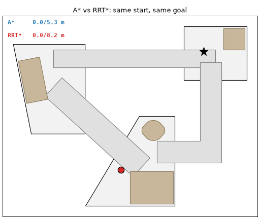
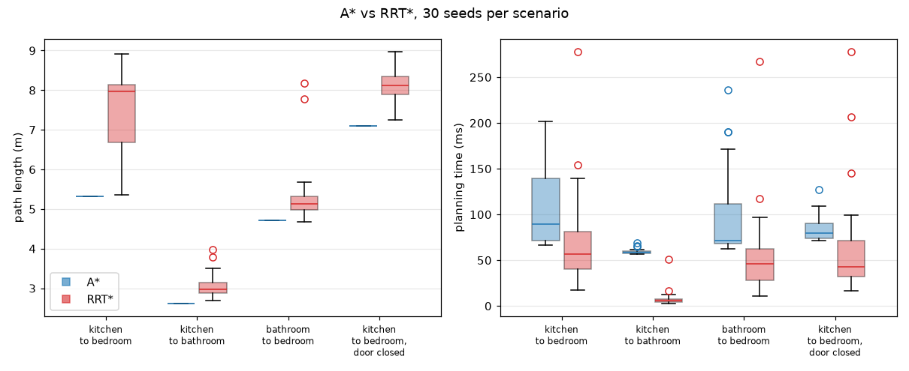

A* and RRT* plan a route through the same rooms. Which one gets there first, and what happens when a door shuts?
Both robots start in the kitchen and drive to the bedroom at the same speed, 1 m/s. The blue one plans with A*, which searches a grid of 5 cm cells for the shortest route. The red one plans with RRT*, which grows a random tree through free space until the tree reaches the goal. The faint red lines are that tree.

Each scenario was planned 30 times with each planner, using seeds 0 to 29. A* gives the same path every time, so only its time changes. Planning time includes building the occupancy grid for A*.
| scenario | planner | success | length (m) | best / worst (m) | median time (ms) |
|---|---|---|---|---|---|
| kitchen to bedroom | A* | 100% | 5.33 | 5.33 / 5.33 | 75 |
| RRT* | 100% | 7.45 ± 1.05 | 5.36 / 8.91 | 45 | |
| kitchen to bathroom | A* | 100% | 2.61 | 2.61 / 2.61 | 63 |
| RRT* | 100% | 3.06 ± 0.30 | 2.68 / 3.98 | 6 | |
| bathroom to bedroom | A* | 100% | 4.72 | 4.72 / 4.72 | 71 |
| RRT* | 100% | 5.31 ± 0.76 | 4.68 / 8.18 | 44 | |
| kitchen to bedroom, door closed | A* | 100% | 7.09 | 7.09 / 7.09 | 79 |
| RRT* | 100% | 8.09 ± 0.41 | 7.26 / 8.98 | 47 |

A* found the shorter path on average in every scenario, and it found the same path every time. RRT* was less predictable: from the kitchen to the bedroom it took the short hallway in only 6 of 30 runs and drove around through the bathroom in the rest. That hallway is narrow and has a bend, so random samples rarely land inside it before the tree reaches the goal another way.
A* is not always shortest. Between the bathroom and the bedroom, the best RRT* run (4.68 m) beat A* (4.72 m), because A* can only move between neighbouring grid cells while RRT* can connect points at any angle.
RRT* was usually faster here, but this is mostly the grid. Building the grid takes about 70 ms, and the A* search on it takes about 12 ms. In a small house that is cheap. In a large map, or one that changes often, the grid cost grows.
This is one small 2D world with a round robot that drives along the path at constant speed. The robots do not sense anything. When the door closes, they are told about it and plan again from scratch. The RRT* in PyRoboSim stops as soon as the two trees connect, so it does not keep improving its path with extra time the way RRT* can. With more time it would likely close some of the gap to A*.